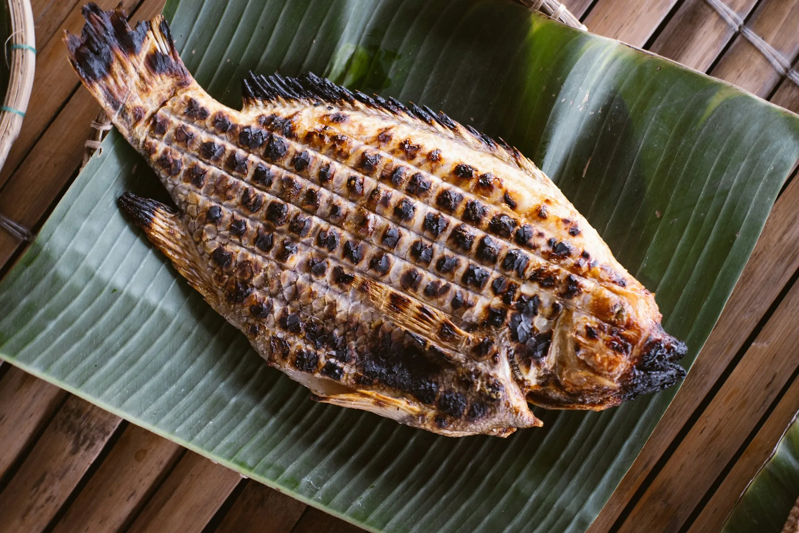
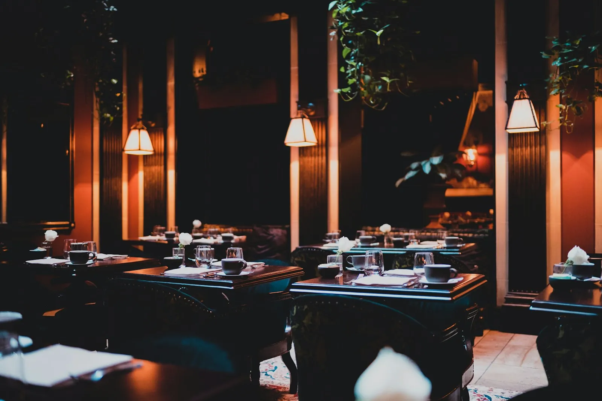
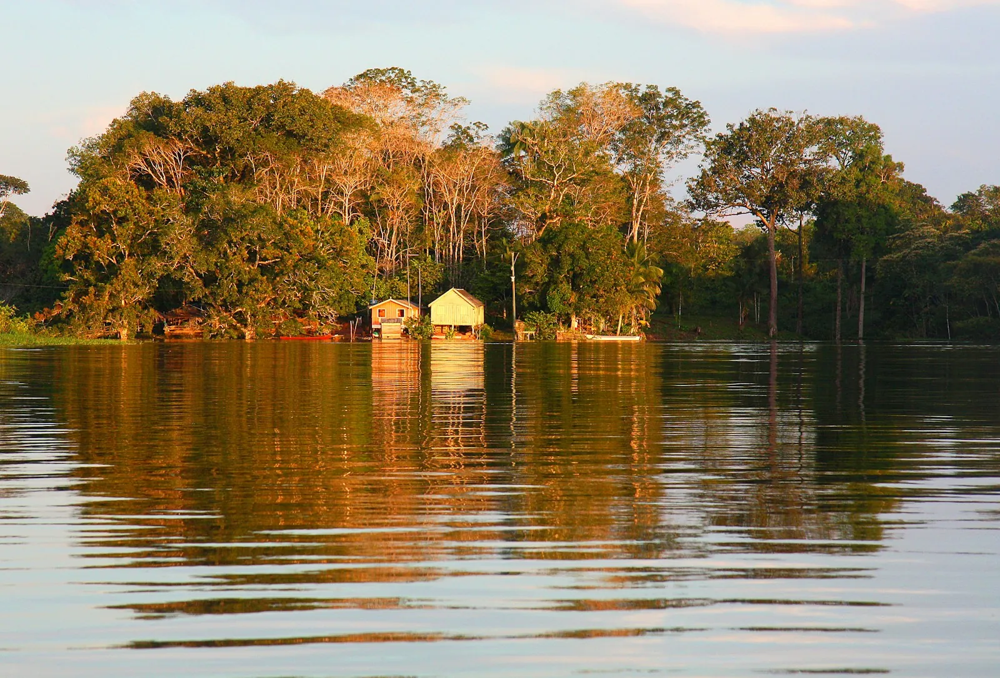

Peixaria amazônica · Manaus
Peixe da Amazônia, na brasa.
Tambaqui, jaraqui e pirarucu assados na folha de bananeira, com farinha do Uarini e aquele vinagrete que só quem é daqui sabe fazer.
Ter a dom · 11h às 23h
Delivery na zona centro-sul
Ponta Negra, Manaus
Tambaqui na brasaJaraqui fritoPirarucu de casacaAçaí com tapioca


O lugar
Mesa grande, brasa no centro.
A cozinha é aberta: você vê o peixe chegar na grelha. O salão foi pensado pra família inteira e pra quem quer comer sem pressa, vendo o fim de tarde.
80lugares
2ambientes
1brasa acesa
Quem já veio
O que dizem da casa.
★★★★★“A banda de tambaqui chega inteira e ainda estalando. Voltamos todo domingo.”
★★★★★“Pedi pelo WhatsApp e chegou quentinho. O vinagrete é outro nível.”
★★★★★“Lugar bom pra levar quem é de fora e mostrar a comida daqui.”
Avaliações ilustrativas deste modelo. No seu site entram as avaliações reais do seu Google.
Onde estamos
Vem pra mesa.
- Terça a quinta11h às 22h
- Sexta e sábado11h às 23h30
- Domingo11h às 17h
- Segundafechado